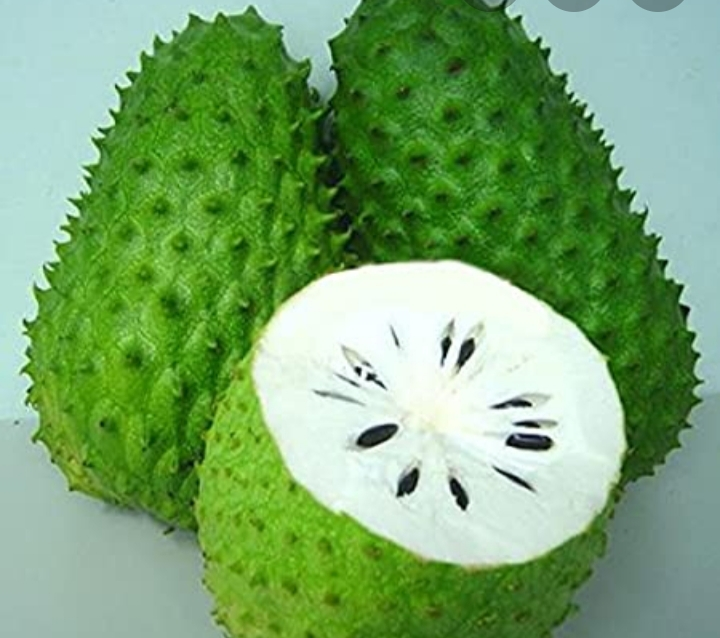

Les Fruits et leurs Bienfaits
Manuela Kengmo, 25 mai, 2024
| Fruit | Vitamines Principales | Bienfaits pour la Santé | Image |
|---|---|---|---|
| Pomme | Vitamine C, Vitamine K |
|
|
| Banane | Vitamine B6, Vitamine C |
|

|
| Orange | Vitamine C, Folate |
|

|
| Fraise | Vitamine C, Manganèse |
|
|
| Raisin | Vitamine C, Vitamine K |
|

|
Mes Fruits Preferees
mandarine
mangue
corossol 